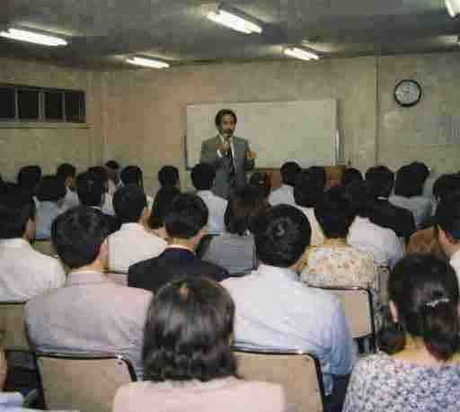

圓山 越（まるやま こゆる）

神はいない、と私は思ってます。
少なくとも、空の上とか地面の下に住んでる神は、見たことないし、正直、信じられたこともないです。
ただね、人って「見られてない時間」が長く続くと、なんか落ち着かなくならないですか？ 自分が薄くなる感じ。あれ。
大げさな話じゃなくて、生活の手触りの話です。
例えば、あなたは愛されている、と言われたらどう思いますか。
突然、誰からともなく。事実かどうかは、まあ、いったん置いときましょう。
問題は「誰に？」って考えた瞬間です。
その問いが浮かんだとき、あなたは何かを想像する。父かもしれない。昔の恋人かもしれない。「世界に」かもしれない。
あるいは「何の話だ」って打ち消すかもしれない。でも、打ち消すにも、いったん像を作らないとできないんですよね。
愛の主体を確定できなくても、形だけは一度、頭に出る。
私はキリスト教の家庭で育って、いつも「神様が見てるよ」って言われてきました。
誰も見てないと思ってるときと、誰かが見てるかもしれないと思ってるときでは、姿勢が変わる。声の出し方もちょっと変わる。
神（上位存在）が本当にいるかどうかは、ここでは二の次です。
大事なのは、「見られてるかもしれない」って想定が、あなたの振る舞いに影響するかどうか。
もし影響するなら、地球で「神」が担ってきた役目が、神の存在の是非に関係なく動いてる、ってことになりませんかね。
私はそこだけを考えてます。神の機能って、結局なんなんだろう、と。
神って、内側にある意識（監視の声）みたいなもので、そこに物語がくっつくと宗教になるだけなんじゃないの？ って。
この考えが信仰かどうかは、まあ、どっちでもいいです。
ただ、生活の中に小さな観測者が立ち上がって、それだけで世界がちょっと変わるんです。
子どもの頃から教会に通ってました。祈りの言葉とか、聖書のフレーズとか身に沁みついてました。
ある日の礼拝で、牧師が言いました。「神は常にあなたを見ている」って。
で、ふつうは「空の上」とか想像しそうなんだけど、私はなぜか胸の奥が先に反応したんです。
見られてる、って感じたのが、天井の向こうじゃなくて、自分の中から。そこが妙に引っかかった。
その後、部屋で一人で「まあいいか」って独り言を言ったときも、言葉がどこかに届いた感じがして。
誰もいないのにね。
心理学でフロイトの「超自我」を知ったんですが、これがまあ、妙にしっくり来ましてね。
人の中には「自分を見張る自分」がいる、という話です。
子どもの頃に親から言われた言葉、「ちゃんとしなさい」とか「嘘をつくな」とか、そういうのが、いつのまにか自分の内側に住みつく。
で、ある日気づくんですよ。親がいなくても、その声が鳴っている。
誰も見てないはずなのに、「それはやめとけ」とか「それは恥ずかしいぞ」とか、勝手にチェックが入る。
つまり、監視役は外から内へ引っ越してくるわけです。
さらにフーコーの話を読むと、これが社会レベルでも起きている、と書いてある。
パノプティコンっていう監獄の設計があって、中央の塔から囚人を見張る仕組みなんですが、面白いのは「本当に見ているかどうか」は関係ないという点です。
見られているかもしれない、という状況だけで、人は勝手に背筋を伸ばす。
ここが肝心です。
実在の視線より、「想定された視線」のほうが強い。
で、私は思ったわけです。
神という概念も、これと同じ構造なんじゃないか、と。
神が空の上にいるかどうかはさておき、「神が見ているかもしれない」と想定した瞬間、内側に観測者が立ち上がる。
その観測者は、あなたの行動を逐一チェックするわけじゃないですが、少なくとも“無人”ではなくなる。
完全に自由、完全に無視されている状態って、実はけっこう不安定なんです。
だから人は、自分の中に監視役を作る。
それが超自我であり、世間の目であり、場合によっては神と呼ばれるものなんじゃないか、と私は思っています。
たとえばですよ。深夜のコンビニで、誰も見てない、カメラもない、証拠も残らない状況があるとする。
そのとき、手が止まる人がいる。止まらない人もいる。
止まる人って、誰に見られてるんでしょうね？ 外の誰かじゃなく自分が自分を見てる。
神が内在してるって仮説は、ここに近いと思ってます。
これで急に善人になるとかじゃないですよ（笑） でも、言い訳が通用しなくなる感じは出る。
「世間の目」って言うじゃないですか。世間って人じゃないのに、妙に効くんですよね。
心理学だと、親とか先生とか近所とか、いろんな視線が混ざって、いつのまにか自分の中に「こうするべき」という規律ができる、って話がある。
つまり、世間は外にあるようで、中にある（ナニ～？）。
世間を連れて歩いてる自分が、いちばん厄介なんですよ。
祈りってお願い事だと思われがちなんですが、私は「言葉の型」だと思ってます。
言葉にすると気持ちが少し整う。黙ってると膨らむものが、文章になると輪郭が出るんだよね。
祈りは、それを定期的にやるための装置なのかもしれない。
神がいるから祈るんじゃなくて、祈るという形式を保つために、神という受け手を置いたのでは？ ってね。
だから私は祈りを否定しません。受け手が外にいなくても、話しかける相手として中に置けばいい、と思ってます。
内在神研究サークルの説法も、ぶっちゃけ祈りの練習みたいなもんです（笑）
・内在神研究サークル（配布用）（工事中）
・掲示板（工事中）
現在準備中です。（いつ完成するかは…まあ…💦）